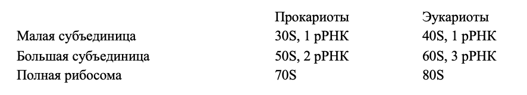

Рибосомы
Рибосомы представляют собой мелкие органеллы, состоящие из рибосомных РНК (рРНК) и рибосомных белков. Они видимы в электронный, но не световой микроскоп, т. к. имеют размеры порядка. Функция рибосом — биосинтез белка. Работающая рибосома включает в себя 2 субъединицы — большую и малую. Они соединяются при синтезе белка. До начала синтеза белка субъединицы должны быть диссоциированы, то есть плавать в цитоплазме отдельно друг от друга. Они могут быть и соединены, но начать синтез белка могут, только предварительно разъединившись.
Рибосомы про- и эукариот различаются по форме и массе. Экспериментально это можно установить путем центрифугирования. Константа седиментации — величина, характеризующая скорость осаждения частиц (измеряется в S — единицах Сведберга). Как правило, у частиц большего размера константа седиментации больше, но она зависит и от формы частицы.
Рибосомы прокариот имеют константу седиментации 70S, состоят из малой — 30S-субъединицы и большой — 50S-субъединицы. Константа седиментации не аддитивна: 70S не равно 30S + 50S. Это объясняется тем, что при соединении субъединиц меняется общая площадь их поверхности и, соответственно, сопротивление раствора при осаждении. В малой субъединице рибосом прокариот 1 молекула рРНК, в большой — 2 (все молекулы рРНК в рибосоме разные и характеризуются особой структурой и массой).
Рибосомы эукариот имеют константу седиментации 80S, состоят из малой — 40S-субъединицы и большой — 60S-субъединицы. В малой субъединице рибосом эукариот 1 молекула рРНК, в большой — 3 (на одну больше, чем у прокариот).
Рибосомы в клетках эукариот могут быть свободными, то есть находиться в цитоплазме, или быть ассоциированными с внешней (цитоплазматической) стороной шероховатой ЭПС. Во втором случае они ассоциированы с ЭПС только в ходе синтеза белка, который должен встроиться в мембрану или пройти в полость ЭПС, и после окончания синтеза такого белка рибосома «отваливается» от ЭПС и снова уходит в цитоплазму.
Цитоскелет
Эукариотическую клетку пронизывает система структур, называемая цитоскелетом. Он выполняет функции опоры, поддержания формы клетки, движения (как всей клетки, так и различных грузов внутри нее, в том числе пузырьков и органелл).
Цитоскелет эукариотической клетки включает белковые волокна 3 типов:
- микротрубочки;
- актиновые нити (тонкие филаменты);;
- промежуточные филаменты;

Три типа цитоскелетных нитей, слева направо: актиновые филаменты (микрофиламенты), промежуточные филаменты, микротрубочки
Микротрубочки
Самые толстые из цитоскелетных нитей — микротрубочки, их диаметр порядка 25 нм. Это полые трубки, которые построены из димеров белка тубулина (от лат. «тубула» — трубочка), уложенных по спирали.
Тубулин для построения микротрубочки должен быть связан с ГТФ.
Микротрубочка имеет плюс-конец, на котором преимущественно происходит ее рост, и минус-конец, где преимущественно происходит разборка. Чтобы микротрубочка не разбиралась с минус-конца, она должна быть прикреплена к центру организации микротрубочек, который блокирует минус-конец и не дает микротрубочке разбираться.
Микрофиламенты — актиновые нити
Второй вид — микрофиламенты, построенные из глобул белка актина, связанного с АТФ. Диаметр микрофиламентов — порядка 6 нм, это самые тонкие цитоскелетные нити.
Актиновые нити не организованы радиально вокруг центра, как микротрубочки, а образуют трехмерную сеть, особенно плотную под мембраной клетки. Они необходимы для поддержания формы поверхности клетки (субмембранный кортекс). Сборка и разборка актинового цитоскелета лежит в основе амебоидного движения, ползания клетки по субстрату, циркулярного движения цитоплазмы у растений.
По актину способны перемещаться («ходить») моторные белки — миозины. Актиново-миозиновые сократимые комплексы обеспечивают деление клетки животных и некоторых простейших путем перетяжки, а также сокращение всех видов мышц (гладких и поперечно-полосатых).
Промежуточные филаменты
Третий вид волокон – промежуточные филаменты. Они называются так потому, что имеют диаметр около 10 нм — промежуточный между актиновыми нитями и микротрубочками.
Белковый состав промежуточных филаментов тканеспецифичен. Например, к ним относятся белки кератины, характерные для эпителиев и входящие в состав роговых производных эпидермиса. Другие белки промежуточных филаментов — десмин, виментин, а также ламины — белки внутренней выстилки ядерной оболочки. Важно отметить, что все мономеры промежуточных филаментов — фибриллярные белки, то есть белки, молекула которых имеет вид волокна вытянутой структуры. Этим они отличаются от микротрубочек и микрофиламентов, мономеры которых — глобулярные (округлые) белки актин и тубулин.
Промежуточные филаменты стабильны (в отличие от динамичных микротрубочек и тонких филаментов, которые подвержены постоянной сборке-разборке) и в основном отвечают за поддержание формы клеток. Участие в движениях для них нехарактерно. В клетке все эти типы цитоскелета существуют параллельно и функционируют координированно.
Клеточный центр. Центриоли
В клетке микротрубочки радиально (звездообразно) расходятся в стороны от клеточного центра, где находятся центры организации микротрубочек.
В клетках животных в клеточном центре находятся парные образования, называемые центриолями. Центриоли представляют собой полые цилиндры, расположенные перпендикулярно друг другу. Эти цилиндры построены из микротрубочек. В каждом из них 9*3 — 9 триплетов, то есть троек, микротрубочек. В клетках растений и высших грибов центриолей нет.

Начало сборки микротрубочек из тубулиновых димеров происходит в клеточном центре. Микротрубочки составляют основу жгутиков и ресничек. По ним осуществляется транспорт клеточных органелл.
Клеточный центр способен удваиваться — каждая из центриолей достраивает возле себя дочернюю. Два образовавшихся клеточных центра расходятся и становятся полюсами так называемого веретена деления, организуя микротрубочки, которые растаскивают хромосомы эукариот по двум дочерним клеткам.
Центриоли также обязательно находятся в основании жгутиков и ресничек эукариот. Такие центриоли называются базальным телом жгутика или реснички.
Моторные белки
Моторные белки - сложные молекулярные машины , благодаря которым движутся организмы, перемещаются пузырьки и другие "грузы" внутри клеток, происходят изменения формы клеток.
Моторные белки способны расщеплять АТФ или ГТФ и за счет выделяющейся при этом энергии «шагать» по цитоскелетным нитям — актину или микротрубочкам. Все они устроены похожим образом. По актиновым нитям (микрофиламентам) способны «шагать» миозины — неотъемлемый компонент мышечных волокон, а по микротрубочкам — динеины и кинезины. За счет работы динеина, «шагающего» по микротрубочкам, бьются жгутики и реснички.
Жгутики и реснички
У эукариот жгутики и реснички внутренние, то есть покрыты мембраной снаружи. Они построены из
микротрубочек. В основе жгутика либо реснички — микротрубочковая структура 9*2 + 2 (9 дублетов —
двоек — микротрубочек по периферии + 2 свободные микротрубочки в центре). Такая структура называется аксонемой.
Жгутик способен волнообразно изгибаться, а ресничка — биться, как хлыст. Движение происходит
за счет перемещения по микротрубочкам аксонемы моторного белка динеина. Он как бы стремится
вытолкнуть микротрубочку, по которой идет, вверх, но так как длина жгутика ограничена, он при
этом вынужден изгибаться. Попеременное изгибание в разные стороны достигается активацией работы
динеина то на одной, то на другой стороне жгутика.